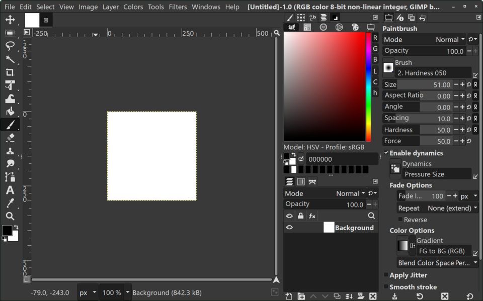

Что называют объектом в GIMP?
Вспоминаем отличие растрового редактора от векторного.
Изображение может состоять из множества отдельных элементов: геометрических фигур, фотографий, декоративных деталей и надписей. Для удобства будем называть такие элементы графическими объектами.
В GIMP объект — это не обязательно самостоятельная векторная фигура. Чаще всего это содержимое слоя или выделенный фрагмент растрового изображения. Чтобы изменять разные элементы независимо, их удобно размещать на отдельных слоях.
Геометрические фигуры
Прямоугольники, круги и эллипсы, созданные с помощью выделения и заливки.
Фрагменты фотографий
Отдельные предметы и детали, которые можно выделить и перенести на другой слой.
Декоративные элементы
Цветные формы и детали, из которых можно составить целостную композицию.
💡 Не путай: в векторном редакторе фигуры обычно остаются самостоятельными объектами. В GIMP при рисовании на одном растровом слое пиксели могут объединяться, поэтому разделение по слоям особенно важно.
Слои: независимое редактирование
Представь несколько прозрачных плёнок, наложенных друг на друга.
Слой — отдельная часть изображения, которую можно редактировать независимо от других. В диалоге «Слои» видно, какие слои есть в проекте, какой слой выбран и в каком порядке они расположены.
Верхний слой перекрывает нижние там, где его пиксели непрозрачны. Изменяя порядок слоёв, мы изменяем видимость объектов.
Для нового объекта выбери «Слой → Создать слой…» и укажи прозрачную заливку. Для копирования уже готового объекта можно использовать команду «Слой → Создать копию слоя».


Создание объекта и выделение фрагмента
Граница выделения показывает, с какими пикселями мы собираемся работать.
Для создания простых фигур удобно использовать прямоугольное и эллиптическое выделение. Сначала выделяем область на прозрачном слое, затем заполняем её цветом — так появляется новый графический элемент.
Основные способы выделения
Прямоугольное — для прямоугольных областей; эллиптическое — для кругов и овалов; свободное — для областей произвольной формы; выделение смежных областей — для похожих соседних пикселей.
Из выделения в самостоятельный объект
Выделенный фрагмент готовой картинки можно скопировать и вставить как новый слой. Тогда он становится отдельным редактируемым элементом композиции.
✅ Практический совет: после заливки нового объекта воспользуйся «Выделение → Снять выделение», чтобы рамка больше не ограничивала последующие действия. Не путай перемещение рамки выделения и перемещение самого объекта.
Перемещение, масштаб, вращение и отражение
Четыре основных способа изменить графический элемент.
Преобразования помогают менять положение и внешний вид элементов композиции. Если объект находится на отдельном слое, к нему можно применить инструмент, не затрагивая остальные части изображения.
Как преобразовать именно слой?
Выбери нужный слой в диалоге «Слои». В параметрах инструмента преобразования проверь, что выбран режим «Слой», а не «Выделение», «Контур» или «Изображение».
Как сохранить пропорции?
При использовании инструмента «Масштаб» следи за связью ширины и высоты: значок цепочки позволяет сохранять их соотношение. Сильное увеличение растровой фигуры может ухудшить чёткость её краёв.
⚠️ Типичная ошибка: инструмент преобразовал не ту часть изображения. Перед действием проверь активный слой, режим инструмента и наличие выделения. Если результат неверный, воспользуйся отменой действия.
Копирование и порядок расположения объектов
Повторение элементов и наложение слоёв помогают построить композицию.
Если требуется несколько похожих объектов, не обязательно рисовать каждый заново. Можно создать копию слоя, переместить её и применить отдельное преобразование. Например, для симметричной композиции удобно использовать отражение.
Прямоугольник перемещён и оформлен небольшой асимметричной меткой.
Круг масштабирован, чтобы он выделялся среди остальных элементов.
Эллипс повёрнут под углом для изменения композиции.
Копия прямоугольника отражена: жёлтая метка оказалась с другой стороны.
✅ Почему метка важна: обычный прямоугольник, круг или эллипс могут выглядеть одинаково после зеркального отражения. Если добавить несимметричную деталь, результат отражения станет заметным.
Практическая работа
Общая цель и два равноценных способа выполнения.
💻 Создание в GIMP
Создай редактируемый проект размером 900 × 600 пикселей.
- Запусти GIMP и создай новое изображение 900 × 600 px с фоном.
- Создай прозрачный слой «Прямоугольник». Прямоугольным выделением и заливкой нарисуй фигуру; добавь цветную метку в одном её углу.
- На отдельных прозрачных слоях нарисуй круг и эллипс с помощью эллиптического выделения и заливки. После каждой фигуры снимай выделение.
- Выбери нужный слой и инструмент «Перемещение». Измени положение прямоугольника.
- Выбери слой с кругом и с помощью «Масштаба» увеличь или уменьши его, сохранив пропорции.
- Выбери слой с эллипсом и инструментом «Вращение» поверни его на заметный угол.
- Создай копию слоя с прямоугольником и меткой. Примени к копии горизонтальное отражение, затем перемести её в другую часть изображения.
- Измени порядок слоёв, чтобы часть фигур перекрывала другие. Проверь, что преобразования применялись к нужным слоям.
- Сохрани редактируемый проект в XCF и экспортируй итоговое изображение в PNG.
📒 Моделирование на бумаге
Выполни те же преобразования на листе бумаги или в тетради.
- Нарисуй рамку будущей композиции. Условно считай её холстом 900 × 600 px.
- Нарисуй прямоугольник, круг и эллипс, выбрав для каждого разный цвет. Добавь к прямоугольнику небольшую метку в одном углу.
- Подпиши фигуры как отдельные слои: «Прямоугольник», «Круг», «Эллипс».
- Покажи перемещение прямоугольника: отметь его прежнее положение пунктиром и нарисуй стрелку к новому.
- Покажи масштабирование круга: рядом изобрази его увеличенный или уменьшенный вариант с сохранением формы.
- Покажи вращение эллипса, нарисовав его под заметным углом по сравнению с исходным положением.
- Нарисуй копию прямоугольника с меткой в зеркальном виде: метка должна оказаться с противоположной стороны.
- Собери в рамке окончательную композицию из преобразованных фигур с частичным перекрытием и подпиши порядок слоёв (сверху вниз).
- Оформи работу аккуратно; возле фигур сделай короткие подписи: «перемещение», «масштаб», «вращение», «отражение».
Общие критерии оценивания
- Есть законченная композиция из нескольких фигур.
- Показаны прямоугольник, круг и эллипс.
- Продемонстрировано перемещение.
- Продемонстрировано масштабирование.
- Продемонстрировано вращение.
- Создана зеркальная копия фигуры.
- Показано частичное перекрытие объектов и порядок слоёв.
- Работа оформлена аккуратно, преобразования понятны.
✅ Оба маршрута равнозначны по учебной цели. Важнее правильно показать создание и преобразование объектов, чем сложность рисунка или наличие установленной программы.
Сохранение проекта и готового изображения
Две разные задачи — два разных формата.
В GIMP важно различать сохранение проекта для дальнейшего редактирования и экспорт готового изображения для просмотра или отправки.
Редактируемый проект
Сохраняет слои и другие сведения, необходимые для продолжения работы. Используй «Файл → Сохранить».
Готовая картинка
Удобна для просмотра и отправки, но не сохраняет редактируемую структуру слоёв GIMP. Используй «Файл → Экспортировать как…».
💾 Не заменяй одно другим: PNG сохраняет видимую композицию, а XCF нужен, если позднее потребуется изменить положение отдельных объектов.
Вопросы для повторения
12 вопросов по теории и практической работе.
- Что можно считать графическим объектом при работе в GIMP?
- Почему объекты удобно размещать на отдельных слоях?
- Чем граница выделения отличается от содержимого слоя?
- Как создать простую фигуру с помощью выделения и заливки?
- Как изменить положение отдельного объекта в GIMP?
- Что изменяет инструмент «Масштаб» и зачем сохранять пропорции?
- Для чего используется инструмент «Вращение»?
- Чем горизонтальное отражение отличается от вертикального?
- Как создать копию объекта и независимо изменить её?
- Почему порядок слоёв влияет на видимость объектов в композиции?
- Что нужно проверить, если преобразование применяется не к тому элементу?
- Чем сохранение проекта в XCF отличается от экспорта изображения в PNG?
✨ Итог урока
В GIMP можно создавать графические элементы и редактировать их независимо, если размещать их на отдельных слоях. Для работы с объектами используются выделение, перемещение, масштабирование, вращение, отражение и копирование. Изменяя порядок слоёв, можно управлять перекрытием фигур и строить композицию. Проект сохраняют в XCF, а готовое изображение экспортируют в PNG.